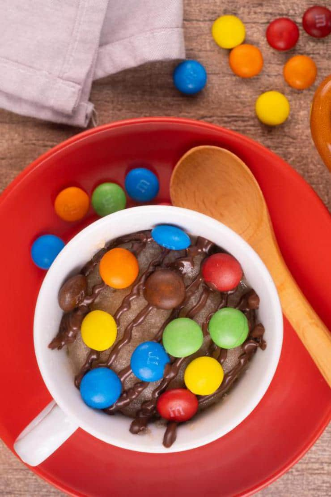

Mug Brownies

Delicious warm and ooey gooey mug brownie topped with M&Ms
Make mug brownies inside of the microwave. This is so delicious and easy to do and should only take about 5 minutes.
Ingredients
- 1 oz dark chocolate
- 1 1/2 tbsp butter
- 2 tbsp sugar
- 2 tbsp milk
- 4 tbsp flour
- 1/4 tsp baking powder
Directions
- Into a mug, add in your chocolate and butter. Place into microwave for about 30-45 seconds until everything melts, then mix it together.
- Then, add in the sugar, milk, flour, and baking powder. Mix everything together until well incorporated.
- Pop into microwave for 1 minute.
- Top off with some melted chocolate and M&Ms.
- Enjoy!